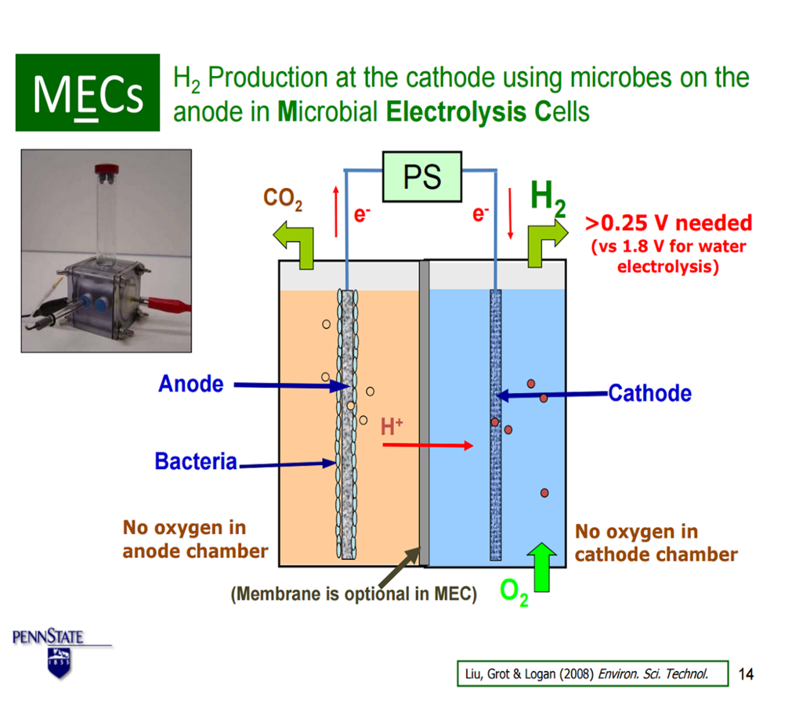
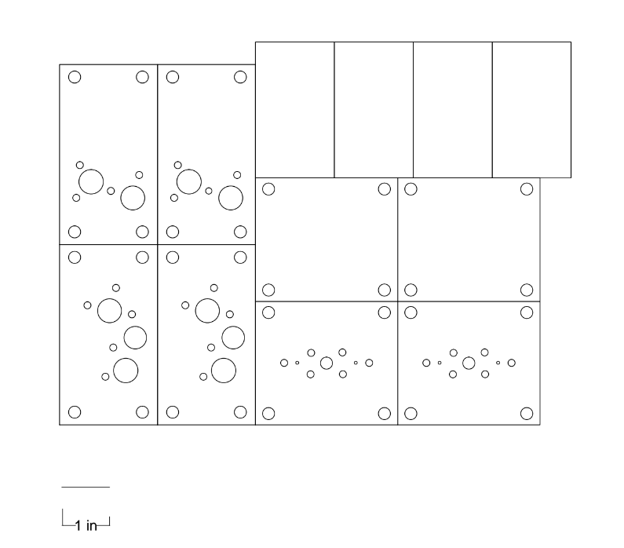
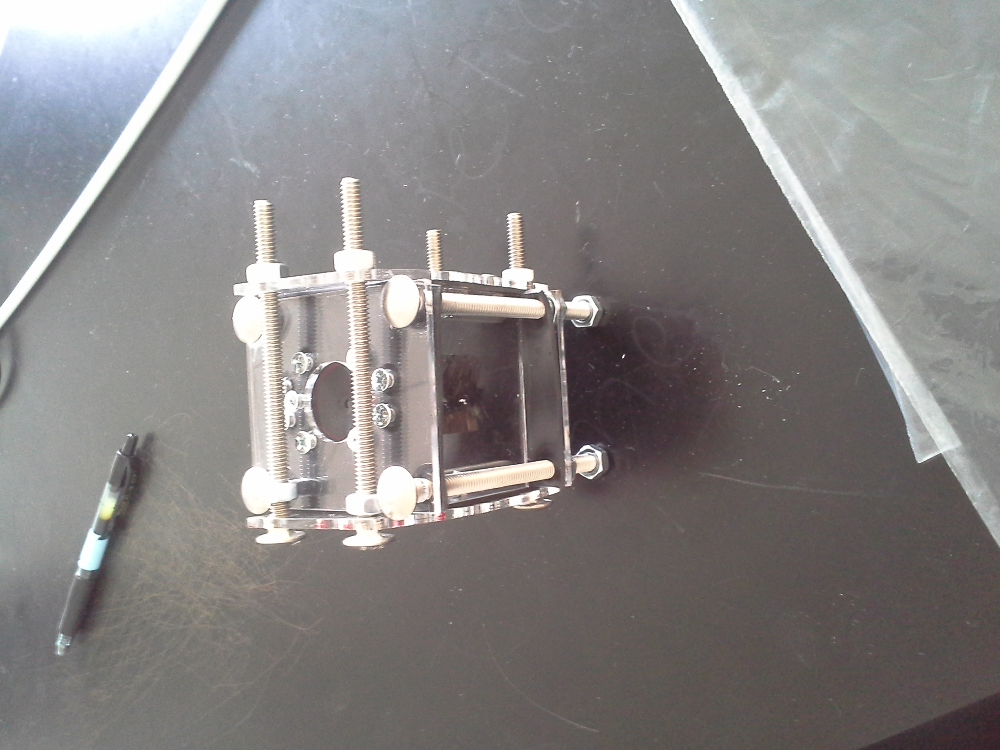
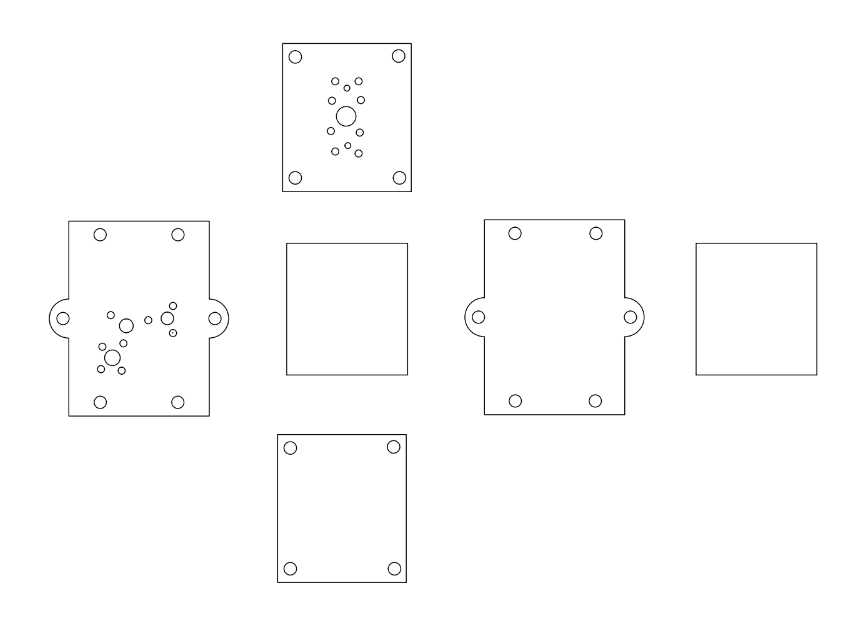
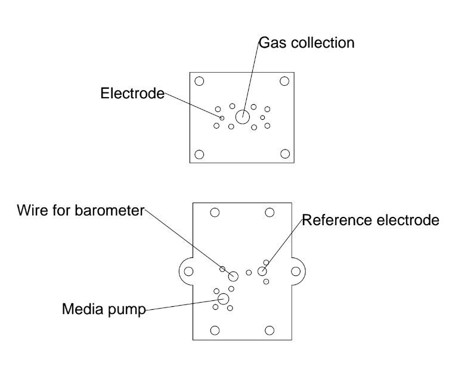
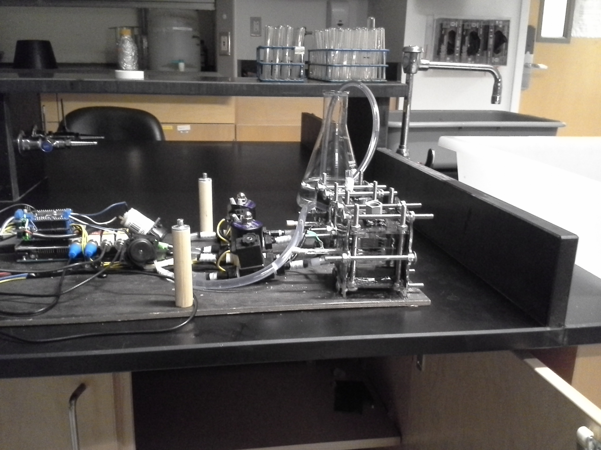

what we built
Microbial electrolysis reverses the flow of current in a more common microbial fuel cell (MFC) to produce hydrogen at lower energy input than other electrolysis technologies utilizing bacteria-mediated electron transfer. The basic components are a voltage source, media for the microbes, a cathode and an anode. Unlike in an MFC, MEC designs typically don’t separate the anode and cathode with a cation exchange membrane due to loss of hydrogen ion diffusion, increased costs and increased complexity with low gains in efficiency. Additionally, an MEC needs to incorporate a way of containing and collecting hydrogen gas produced by the cathode.
We looked at the drilled block design pioneered by Bruce Logan at Penn State and the 3D printed design made by Beiefeild 2013 IGEM team. However, we wanted to be able to insert and remove probes to analyze local pH, dissolved oxygen and potential at different parts of the cell in addition to adding a port for gas collection. We were also concerned about the hydrogen permeability of 3D printed parts, in which layers of plastic may not fully fuse and the program may insert small gaps during manufacturing.

Design
The design incorporated 6 plexiglass plates held together by long screws with rubber gaskets between plates and around ports for the probes, wires, electrodes, pump attachment, and gas removal attachment. Gaskets were secured around ports for inserted components by small screws. We built two chambers to run parallel experiments with modified and wild-type E. coli. We used carbon brush half electrodes to maximize available surface for Geobacter growth at low cost, planning to incorporate Geobacter on both the cathode and anode instead of using a platinum cathode. This design avoids the financial and ecological costs of an inorganic electrode and allows a greater opportunity to test improvements via synthetic biology since biological processes and cells are present at both electrodes. The half electrodes were heat treated at 290 degrees Celsius to improve their effective surface area for Geobacter growth.




This design was effective for low cost, rapid prototyping. However, the seal failed at the corners and ports for probes and wires. Due to equipment and time constraints, we decided to use epoxy to cover leak points. Since we also needed the pH and DO probes for analyzing individual parts. Those sensors were removed from the design and their ports were replaced with smooth plates.


Final Product
